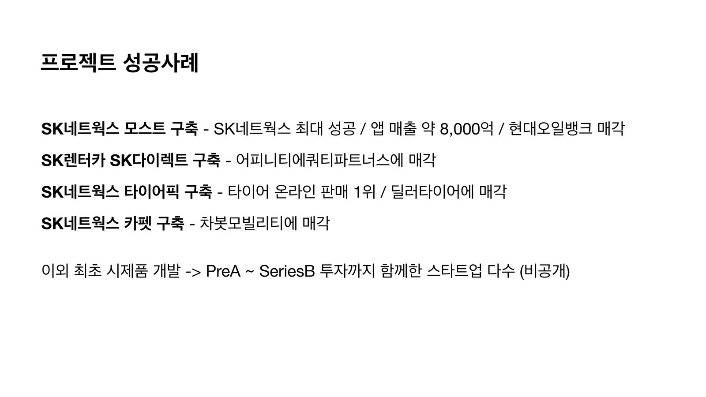
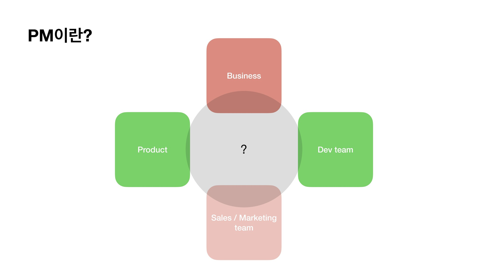
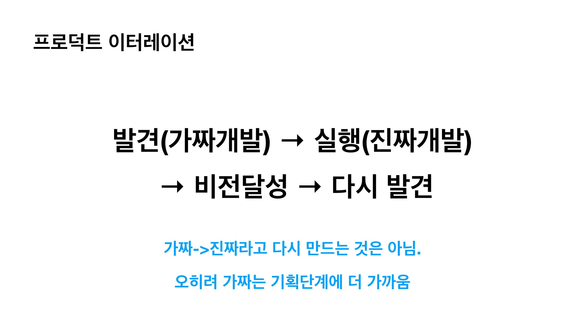
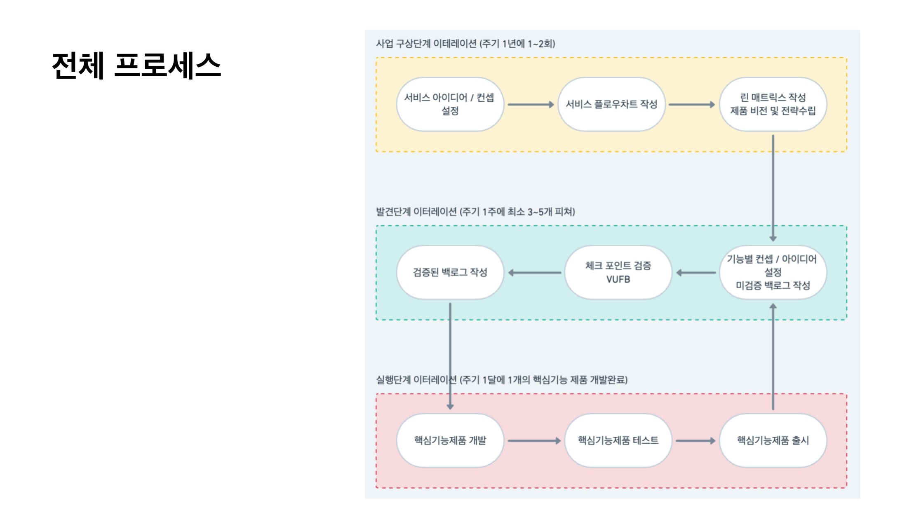

SI 회사로 남의 제품을 팔면서 배운 것
저는 SI 회사를 운영하면서 SK를 비롯한 대기업들과 TF를 꾸려 스타트업처럼 일했어요. 그렇게 만든 프로젝트들 중에서 4개가 PE, 다른 대기업, 스타트업으로 매각됐죠. 직접 소유한 제품은 아니었지만, 인수인계까지 제가 책임지면서 간접적으로 4번의 엑싯을 경험한 겁니다.

솔직히 처음엔 "좋은 제품"이 뭔지 이론으로 알고 있다고 생각했어요. 그런데 실제로 팔리는 제품을 만들어보니까, 제가 몰랐던 게 생각보다 훨씬 많았습니다. 오늘 이야기는 그 "몰랐던 것들"을 하나씩 깨달아가는 과정입니다.
PM이란 직함보다 '총책임자 마인드'가 먼저다
SI 회사에서 저는 대표이면서 동시에 PM이자 영업이자 기획이었어요. 인력이 부족해서 어쩔 수 없이 다 했던 건데, 나중에 돌아보니 그게 오히려 제품을 제대로 만드는 방식이었더라고요.
팀에 PM을 따로 세울 때 문제가 생기는 경우를 많이 봤는데요. PM이 개발팀과 기획팀을 연결하는 "중간 전달자" 역할에 머물면, 제품이 표류하기 시작합니다. 개발팀은 기획서대로 만들면 됐다고 생각하고, 기획팀은 기능 목록 채우면 됐다고 생각하고, 영업팀은 어떻게든 팔겠다고 나서는데—결국 세 팀이 각자 다른 제품을 만들고 있는 상황이 돼요.
제가 생각하는 PM은 이 모든 걸 꿰고 있어야 하는 사람입니다. 기술이 어디까지 되는지, 고객이 진짜로 원하는 게 뭔지, 이걸로 어떻게 돈을 벌 건지, 어떻게 첫 고객을 데려올 건지. 이게 다 PM의 머릿속에 있어야 해요.
직함의 문제가 아니라 마인드셋의 문제입니다.
도메인 지식, 비즈니스 감각, 세일즈까지—이걸 PM이 모른다면 결국 제품은 아무도 책임지지 않는 상태가 됩니다.

MVP를 만들기 전에 먼저 정해야 할 것
MVP를 최소한의 기능으로 만든 시제품 정도로만 보시는 분들이 많은데요. 저도 초반에 그렇게 생각했어요. 그런데 그렇게 만들면 만든 다음에 항상 막히더라고요. "이게 성공한 건가요, 실패한 건가요?"라는 질문에 대답을 못 하게 됩니다.
MVP를 만들기 전에 먼저 정해야 할 게 있어요. "이 MVP로 무엇을 증명할 거냐"입니다.
예를 들어, 저희가 온라인으로 차량을 구매하는 서비스를 개발한 적이 있어요. 테슬라가 유행하기 전 시점이라, 자동차를 보지도 않고 온라인으로 결제한다는 게 사람들한테 익숙하지 않던 때였죠. 이때 MVP로 뭘 만들어야 할까요?
저희는 진짜 서비스를 개발하기 전에, 2시간 만에 간단한 랜딩 페이지 하나를 만들었어요. 그리고 거기다 분석 도구를 달았습니다. 제대로 된 분석 세팅을 하는 데 3일 정도 걸렸어요. 그 다음에 메타 광고를 30만 원어치 돌렸습니다.

이게 저희가 말하는 MVP예요. 피그마 화면 하나가 MVP가 될 수도 있고, 이 랜딩 페이지처럼 가짜로 만든 페이지가 MVP가 될 수도 있어요. 하지만 중요한 건, 이걸로 "사람들이 온라인으로 차를 살 의향이 있는가"라는 질문에 답을 내야 한다는 겁니다. 증명할 것이 없는 MVP는 그냥 미완성 제품일 뿐이에요. 비전이 담겨있지 않으면 MVP가 아닙니다.
우리가 안다고 생각하는 것들의 99%는 착각이다
차량 서비스를 테스트하면서 배운 게 있어요. 저희가 확실히 알고 있다고 생각했던 것들이 실제로는 거의 다 틀렸다는 겁니다.
한 가지 사례를 들면, 저희 서비스는 렌탈 형태였는데요. 렌탈 비용이 신용 등급에 따라 달라지잖아요. 광고를 낼 때 1등급 기준 금액으로 홍보할지, 9등급 기준 금액으로 홍보할지를 두고 팀 내 의견이 갈렸어요.
직관적으로는 당연히 싸 보이는 1등급 기준이 낫지 않겠냐는 쪽이 많았어요. 저도 그렇게 생각했고요. 그래서 AB 테스트를 돌렸는데, 결과가 예상과 달랐어요.

클릭은 1등급 기준 광고에서 더 많이 나왔습니다. 하지만 가장 중요한 지표인 실제 구매 건수는 9등급 기준 광고에서 더 높게 나왔어요. 전환율 비율이 아니라, 실제로 차량을 구매한 사람 수 자체가 9등급 쪽이 많았다는 겁니다.
이유를 생각해보면 이래요. 1등급 기준 금액을 보고 들어온 사람들은 "싸네, 한번 볼까" 하고 클릭하지만, 막상 자기 신용 등급을 조회하면 금액이 달라지니까 이탈합니다. 반면 9등급 기준 금액을 보고 들어온 사람들은 "나도 이 조건으로 가능하겠다"는 확신을 가지고 들어오니까 실제 구매까지 이어진 거죠. 클릭 수가 많다고 구매로 이어지지 않는다는 걸 숫자로 확인한 겁니다.
이 디테일을 어떻게 알 수 있었겠어요? 테스트를 해봤기 때문에 알 수 있었던 겁니다. 저는 이 경험 이후로 "당연히 그렇겠지"라는 확신을 잘 안 갖게 됐어요. 어떤 결정이든 작게라도 테스트부터 해보려고 합니다.
모든 기능 개발, 모든 UI 결정, 모든 가격 정책—이게 다 가설이에요. 그리고 저희 팀은 이 가설들을 목록으로 뽑아두고, 하나씩 실험으로 지워나가면서 제품을 만듭니다.
'개발 완료'에 대해 발주사와 싸운 이야기
SI 회사를 운영하다 보면 발주사와 "개발 완료" 기준을 두고 충돌이 생깁니다.
발주사 입장에서는 개발이 끝났다 하면 다 된 거라고 생각해요. 개발자 입장에서는 기획서대로 코딩하고 QA까지 마쳐서 배포하면 완료입니다. 하지만 저는 그게 30%라고 봐요.
지금 개발이 완료된 건 30%가 끝난 겁니다. 이제 실제 고객을 만나면서 나머지 70%를 채워야 해요. 그게 J커브를 그리는 구간입니다.
저희가 제품을 만드는 순서는 이래요. 실제 개발을 시작하기 전에, 먼저 "이 제품으로 증명해야 할 것들"을 목록으로 뽑아요. 1등급 vs 9등급 같은 것들이요. 그걸 빠르게 실험하면서 하나씩 검증합니다. 피그마 프로토타입으로 할 수도 있고, 랜딩 페이지로 할 수도 있고, 직접 전화 돌려보는 것도 실험이에요.
이렇게 미리 검증을 많이 해두고 나서 본격 개발에 들어가면, 나중에 개발 다 해놓고 "이건 아닌 것 같은데요"라는 상황을 훨씬 줄일 수 있어요. 개발이 완료되면 "우리가 증명하려 했던 것들이 실제로 증명됐나"를 체크합니다. 안 됐으면 다시 돌립니다. 이게 제가 제품을 만드는 원칙입니다.
AI 시대, 방법은 달라졌지만 본질은 그대로다
제가 차량 구매 서비스를 만들 때, 랜딩 페이지 하나 만드는 데 2시간이 걸렸어요. 분석 도구 세팅에 3일. 그게 당시로선 꽤 빠른 편이었습니다.
지금은 다릅니다. AI를 쓰면 그 랜딩 페이지를 30분 안에 만들 수 있어요. 카피도 뽑아주고, 디자인도 잡아주고, 분석 코드도 붙여줍니다. 실험 하나를 세팅하는 데 걸리는 시간이 말 그대로 10분의 1로 줄었어요. 예전엔 실험을 한 달에 두세 번 돌리는 게 한계였다면, 지금은 일주일에 여러 번 돌릴 수 있습니다. 검증의 속도 자체가 달라진 거예요.
AI가 대신 못 해주는 게 있습니다. 뭘 증명하려는지 정하는 일.
실험을 빠르게 돌릴 수 있어도, "이 실험이 왜 필요한가"를 모르면 결과를 봐도 아무것도 배울 수 없어요. 1등급 vs 9등급 테스트를 AI로 세팅하는 건 쉬워졌지만, "구매 건수가 답이고 클릭 수는 그다음이다"라는 판단은 여전히 사람이 해야 합니다.
오히려 AI 때문에 이 부분이 더 중요해졌다고 생각해요. 실행이 쉬워질수록, 방향이 틀렸을 때 낭비되는 속도도 빨라지거든요. 빠르게 잘못된 방향으로 달리는 것보다, 조금 느려도 무엇을 증명해야 하는지 먼저 명확하게 정의하는 게 훨씬 낫습니다.
우리는 여전히 모든 걸 알 수 없어요. 그래서 실험을 합니다. AI는 그 실험을 더 빠르게 해줄 뿐이에요. 성공의 방정식은 그대로입니다.